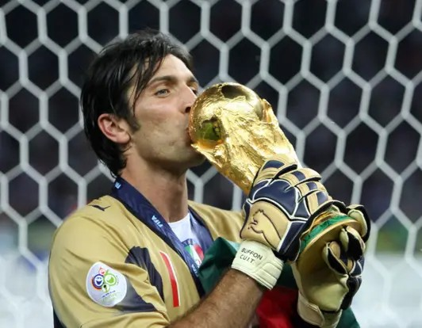
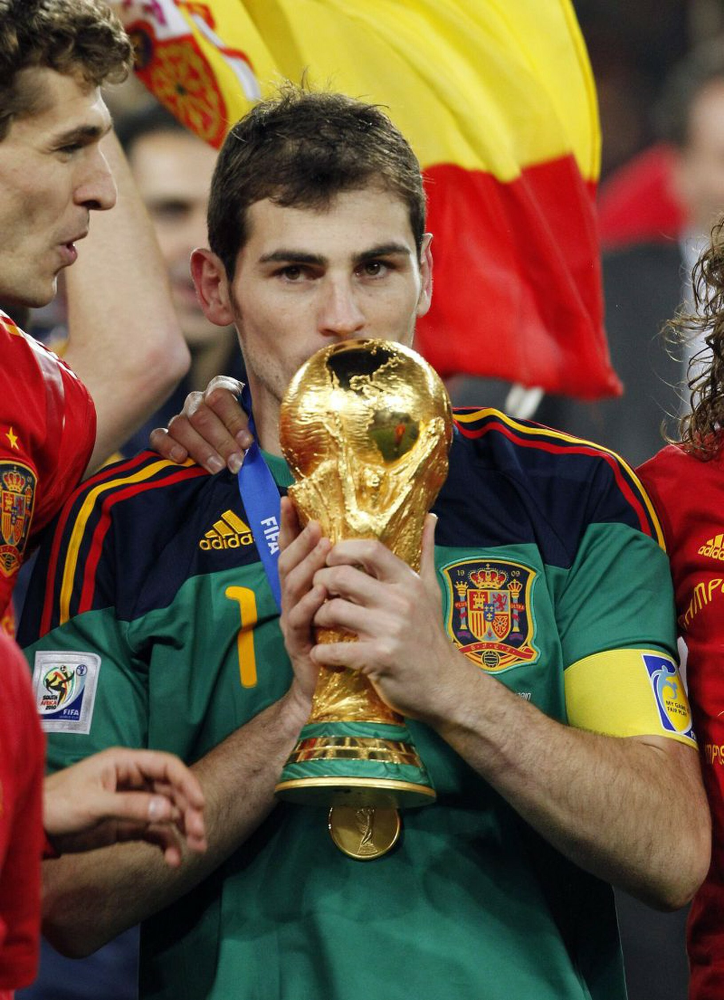
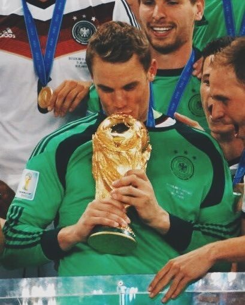

Buffon fue de los mejores arqueros y
para mi, segundo de todos los tiempos
Gano un Mundial en 2006 desde el
punto penal la cual quedaria 5-3
a favor de Italia venciendo a
la Francia de Zinedine Zidane quien
fue expulsado, para nadie es extraño
que los Italianos producen increibles
arqueros, pero el era la Excelencia
de los arqueros Italianos.

Iker Casillas fue para mi el
Mejor arquero de todos los tiempos
Gano el Mundial 2010 con España.
La jugada que lo hizo famoso fue
atajarle una jugada de contra letal
a Arjen Robben en el minuto 62,
esta atajada le costo el mundial
a Paises Bajos y por ende, la final
seria ganada por España, ya que
Paises Bajos carecia de ataques.

Ayyy, como hablar de este arqueraso,
Este Aleman para mi es el 3 mejor
Arquero de todos los tiempos.
Gano el Mundial 2014 con Alemania
Se hizo famoso desde siempre, lleva
15 años siendo arquero del Bayern y
es un arquero muy constante en
su nivel, a sus 40 años todavia
es un arquero de Gran alto Nivel,
en lo personal, mi arquero favorito.